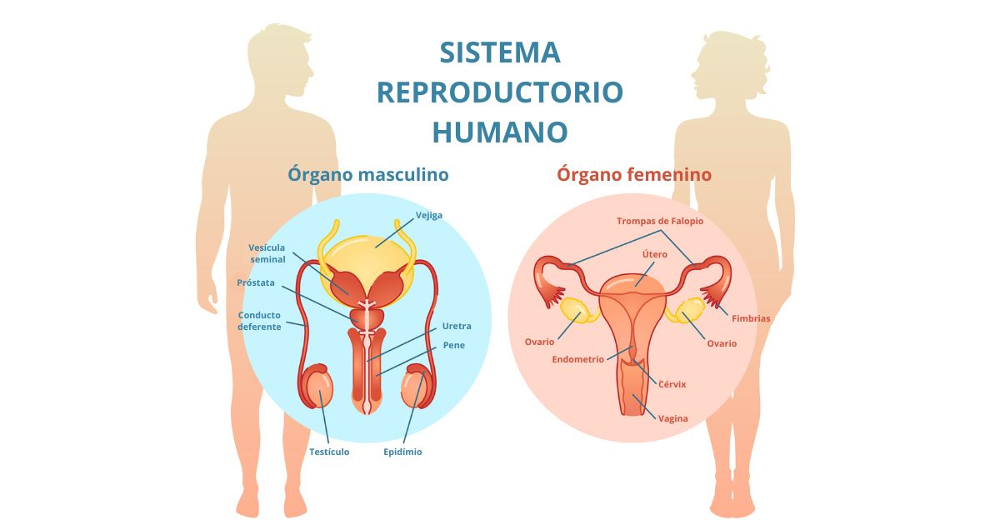

El sistema (o aparato) reproductor es el conjunto de órganos, tejidos y glándulas del cuerpo encargados de la procreación y el desarrollo de nuevas vidas. También tiene un papel fundamental en la producción de hormonas sexuales y el desarrollo de las características físicas.
